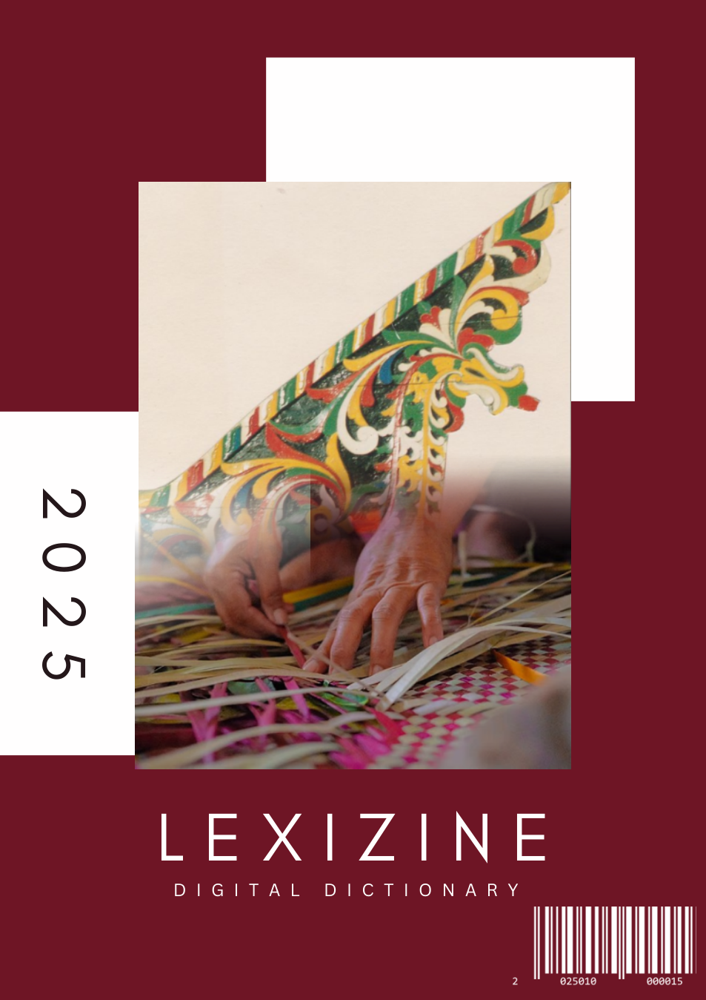
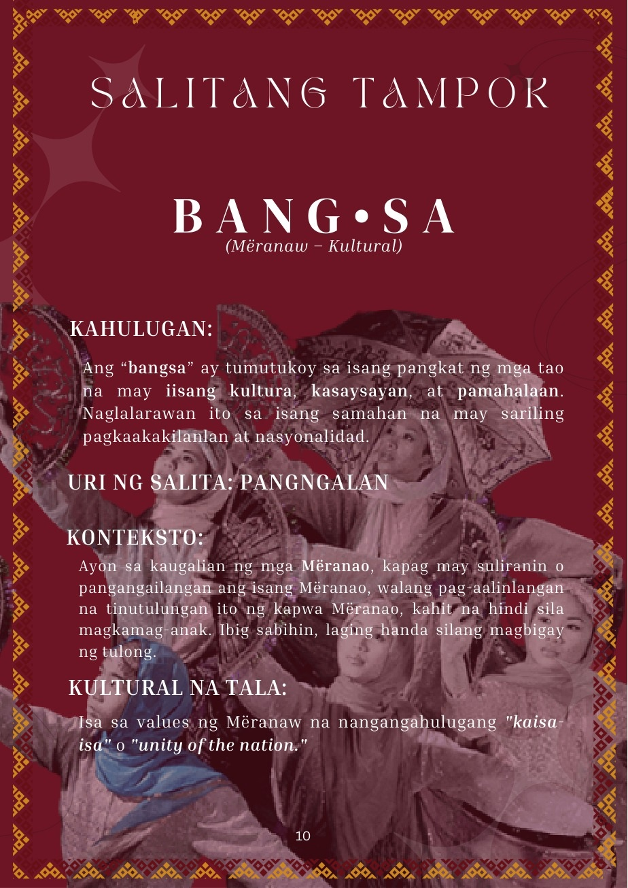
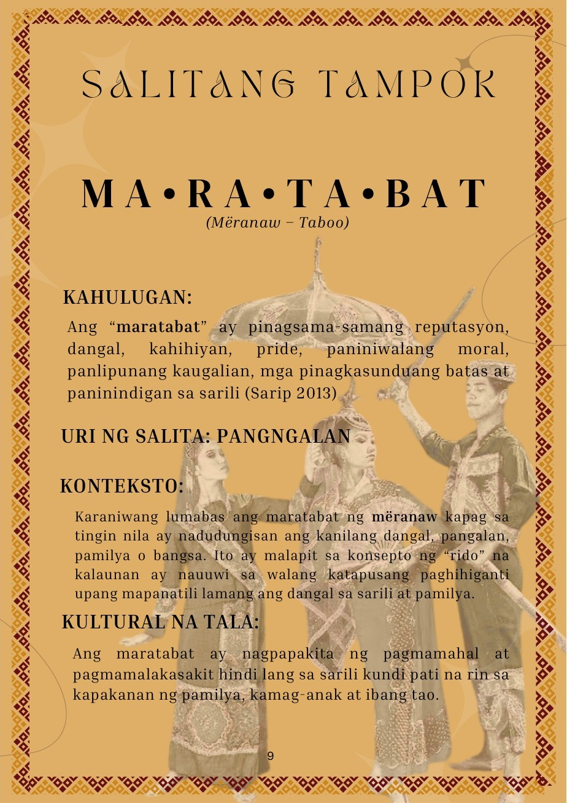
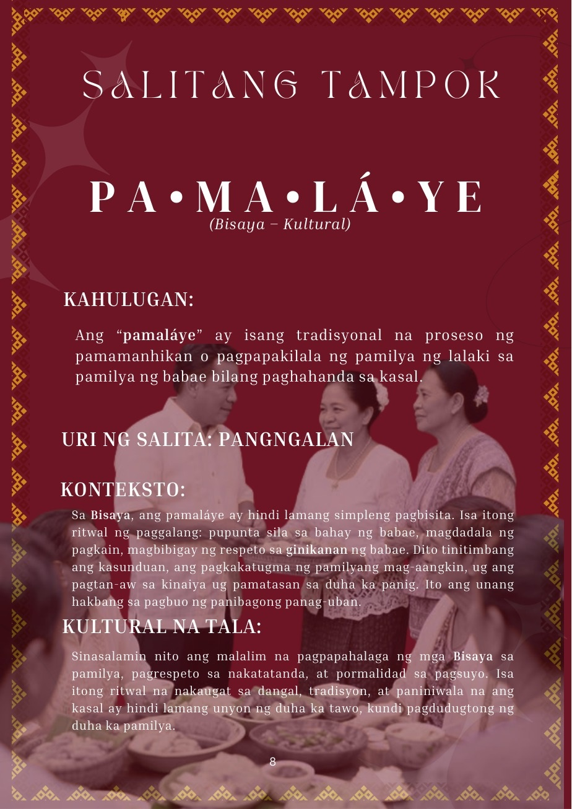
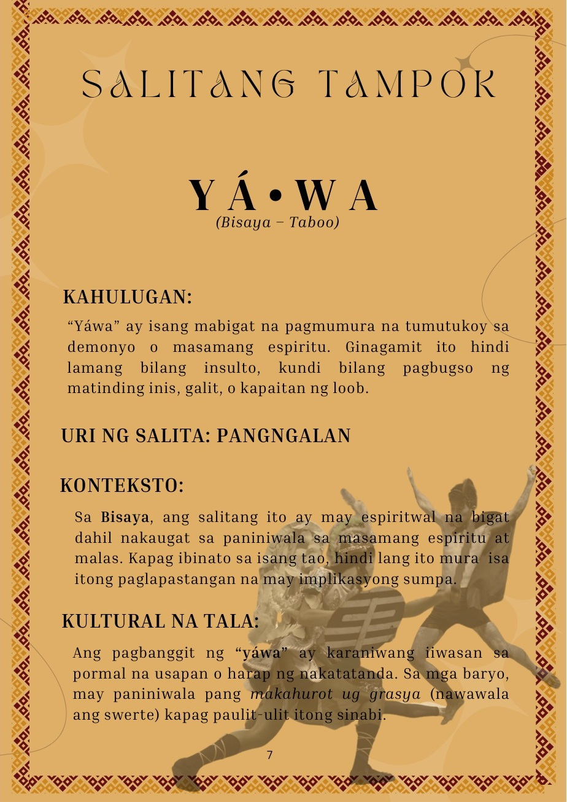
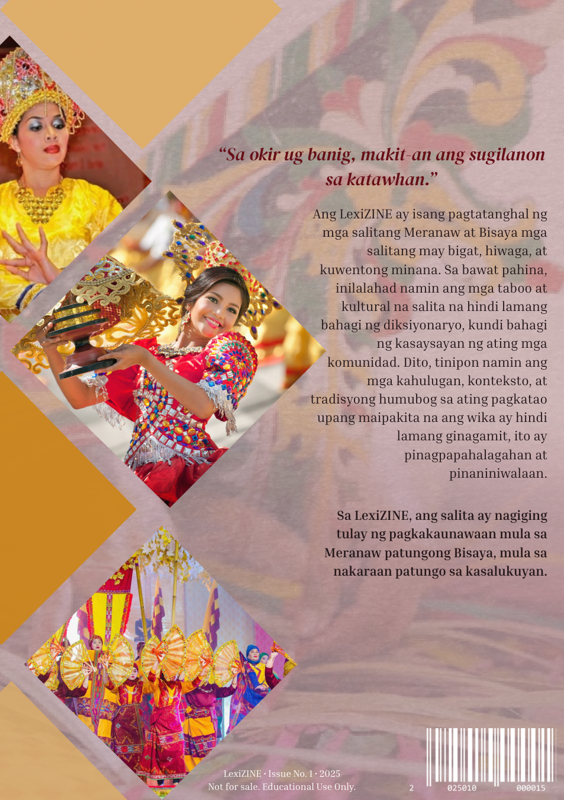

The archive / 002 · Editorial design
LEXIZINE.
A digital dictionary exploring Mëranaw and Bisaya language, culture, and the stories words carry.
Project / LEXIZINEDiscipline / Editorial & publication designCollection / Selected dictionary pages · 2025






A selection of original pages arranged as curated portfolio spreads. The page artwork and text come directly from the supplied LEXIZINE PDF; the pairings are for presentation and do not imply consecutive original pages.